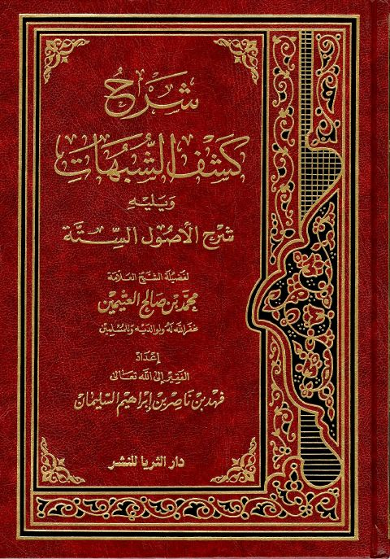
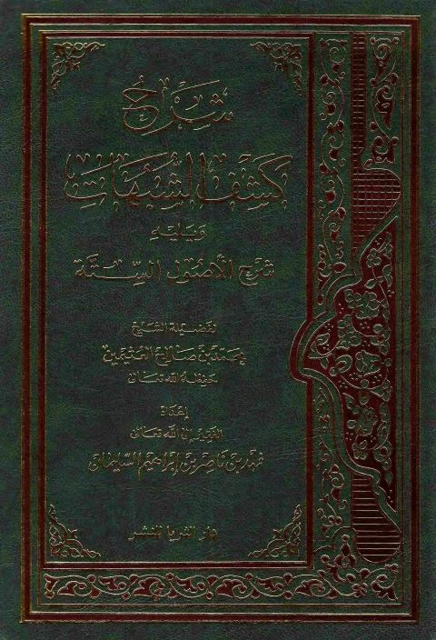
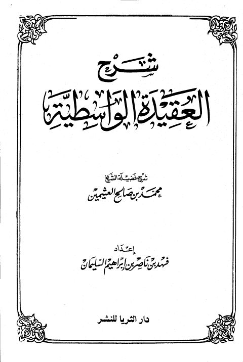
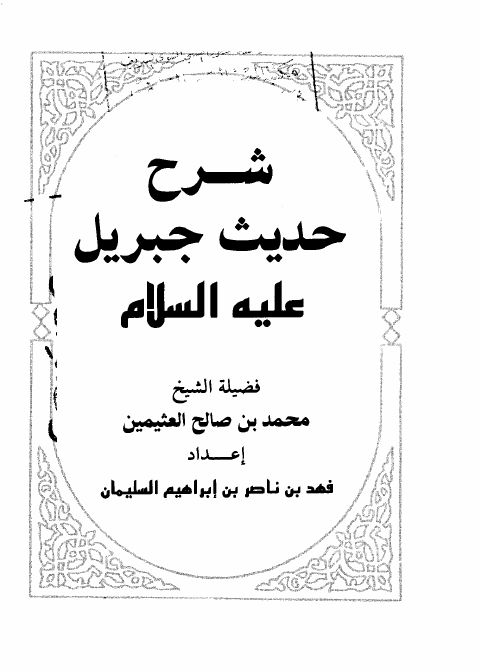
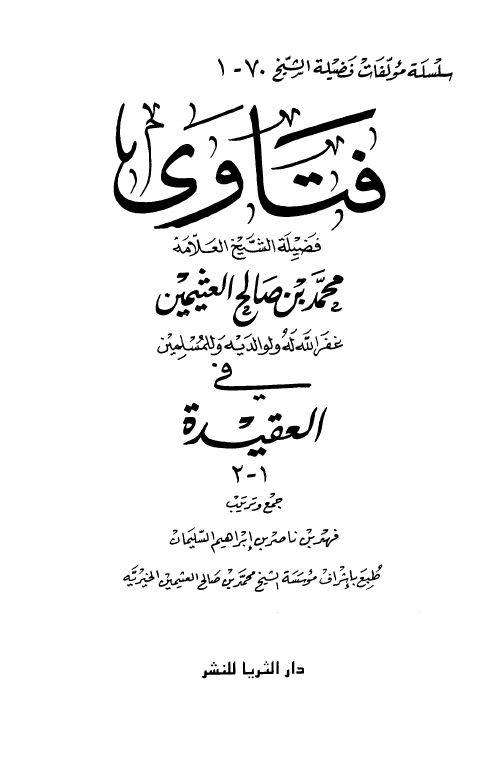
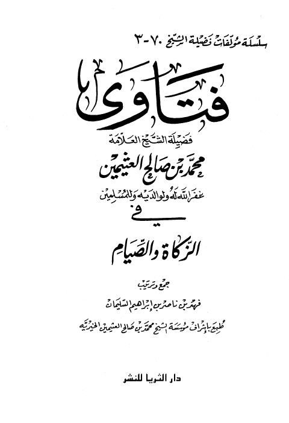

فهد بن ناصر إبراهيم السليمان
Author
Resources

شرح كشف الشبهات ويليه شرح الأصول الستة شرح كشف الشبهات ويليه شرح الأصول الستة محمد بن صالح العثيمين
شرح كشف الشبهات ويليه شرح الأصول الستة شرح كشف الشبهات ويليه شرح الأصول الستة محمد بن صالح العثيمين
شرح العقيدة الواسطية- ط. دار الثريا شرح العقيدة الواسطية- ط. دار الثريا محمد بن صالح العثيمين
شرح حديث جبريل عليه السلام - دار الثريا شرح حديث جبريل عليه السلام - دار الثريا محمد بن صالح العثيمين
فتاوى فضيلة الشيخ محمد بن صالح العثيمين في العقيدة فتاوى فضيلة الشيخ محمد بن صالح العثيمين في العقيدة فهد بن ناصر إبراهيم السليمان الإبداع في كمال الشرع وخطر الابتداع
الإبداع في كمال الشرع وخطر الابتداع
محمد بن صالح العثيمين
الإبداع في كمال الشرع وخطر الابتداع
الإبداع في كمال الشرع وخطر الابتداع
محمد بن صالح العثيمين

فتاوى فضيلة الشيخ العلامة محمد بن صالح العثيمين في الزكاة والصيام فتاوى فضيلة الشيخ العلامة محمد بن صالح العثيمين في الزكاة والصيام فهد بن ناصر إبراهيم السليمان